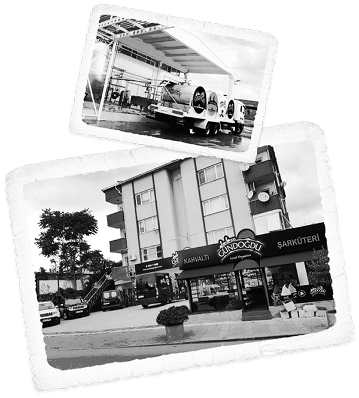
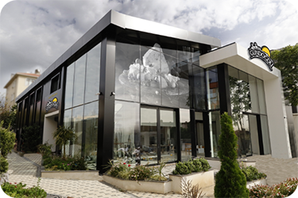

HİKAYEMİZ
Çok kısa zamanda peynirin yeni adı olarak sofralardaki yerimizi almanın mutluluğunu “Türkiye 100 Projesi”nde, en hızlı büyüyen 100 şirket arasına girerek taçlandırdık.
-

Bundan41 yıl önce
bir çocuğun gülüşündeki saflığa, eşsiz bir manzaranın doğallığına, yemyeşil toprakların bereketine duyduğumuz sevgiyle adım attık yepyeni bir güne.
Çünkü geleneksel değerlerimiz kadar, üretimden teknolojiye hayatın her alanında yeni olan da heyecanlandırır bizi. İçimizdeki bu bitmeyen heyecanla geleneksel lezzetlerimizi en doğru, yeni fikirlerimizi en sağlıklı şekilde dünyaya sunmaktı dileğimiz. En doğal halini tanıdığımız sütün sağlık dolu yolculuğunu eşsiz peynirlerimizle süslemeye, işte böyle başladık.
-
Çok kısa zamanda peynirin yeni adı olarak sofralardaki yerimizi almanın mutluluğunu “Türkiye 100 Projesi”nde, en hızlı büyüyen 100 şirket arasına girerek taçlandırdık. Yetinmedik, en yeniyi ürettik: Nantwich Uluslararası Peynir Yarışması’nın “Doğal Peynirde Perakende Paket İnovasyonu, Dizaynı, Sunumu ve Tasarımı” dalında kazandığımız Altın Ödül ile gururlandık.
Lezzet, sağlık ve doğallığı bir arada sunuyor olmanın getirdiği sorumluluğun daima farkında, son teknoloji ile kol kola çalıştık.
-

İstedik ki;
keyifle uzayan sohbetlerde, memleket kokan sofralarda, unutulmayacak anlarda, mutlu kahvaltılarda, hem damaklarda hem hafızalarda eşsiz tatlar bırakalım. İki dilim arası keyifler kadar hayatı çepeçevre saran lezzetli anların da başkahramanı olalım. Doğadan geleni en doğal haliyle sunarken, lezzette tek, tasarımda öncü olalım.
Hayallerimize güvendik; çünkü önce doğayı ve doğalı, sonra işimizi sevdik. Böylece her hikayede, her buluşmada, her sofrada daha çok sevildik.